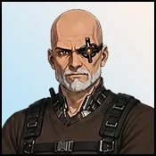

Player wiki noticeThis community-maintained page may contain gameplay, story, and mature-content spoilers.

概览
Cid 是个抵抗技术专家 未来第一区的地下改造诊所他的个人进步是友谊和一次性的技术奖励,并从主场和Nova场景中获得更多的爱意,他的对话仍然是在更高普遍爱心阶段的一个值得信赖的盟友。
快速信息
| 属性 | 数值 |
|---|---|
| 年龄/时代/调整 | 67 /未来/中立 |
| 地点 | 一级地下改造诊所 |
| 时间表 | 每天24小时 |
| 最喜欢的数据/特殊关系技能 | 无配置 |
| 赠品动作 | 无 |
| 个人奖励 | 人对机:技术+1 |
地下改造诊所在 总理它与 弗林格区网络增强诊所参观Cid的地下诊所,以获取他的肖像,Human vs Machine和下面的故事步骤.
个人行走
- 访问 任何时间的地下改造诊所.他的肖像画没有入门的前提。
- 使用 与 Cid 交谈 {\fn黑体\fs22\bord1\shad0\3aHBE\4aH00\fscx67\fscy66\2cHFFFFFF\3cH808080}建立爱心{\fn黑体\fs22\bord1\shad0\3aHBE\4aH00\fscx67\fscy66\2cHFFFFFF\3cH808080}每一次成功的谈话都需要 20分钟 和赠款 1个基本感情,与 每天四种用途.
- 时 已知,与 来 文 78编辑 人类对机器。这需要 30分钟赠款 技术+1和15种直接感情,并完成一次。
- 继续下面的主场和 Nova 场景,以表示他们额外的Cid 感情。这些场景不需要Cid 感情,除非明确声明;他的个人奖励不是他们故事发展的先决条件。
人对机器有 没有配置资金、能源或平静成本它在完成后消失,通讯要求很高,但它为这个奖赏而不是你的第一次会面或普通的谈话打开了大门。
列出的亲情值是基础奖励. Cid没有最喜欢的Stat或特殊技能奖金,尽管共享关系计算,简易模式调整,设备,buffs和对齐仍然可以影响最终收益.
主 Story 外观和奖励
| 场景 | 地点 | 所需进度 | 基调 Cid 感情 |
|---|---|---|---|
| Story 击打 20 | 地下改造诊所 | Story第19集完成 | 25 |
| Story第29话 | 地下改造诊所 | Story第28集完成 | 10 |
| Story第31集 | 地下抵抗隐藏处 | Story第30集完成 | 10 |
| Story第32话 | 地下改造诊所 | Story第31集 完成; 满足下文所述的隐藏战斗要求 | 10 |
| Story第34节 | 业务中心 | Story第33轮完成 | 5;照顾战略增加+2 |
| Story 击球73 | 业务中心 | Story第72批完成 | 4;照顾加+3 |
| Story 击打 74 | 业务中心 | Story | 3;照顾增加+2 |
这些场景在列出的地点自动触发, 在任何时间,并完成一次。他们的奖励也影响到其他参与者。指南使用节拍数字将故事的事件和结果留给游戏。
为: Story第32话,当存在 TD故事要求 首选项启用, 完成 所有十波的隐藏战。大门检查保存的清除波记录。开始波10或赢得不同的战斗并不能满足它。如果取消这种偏好,则跳过附加的战斗门。Cid 感情不能取代这一要求。
Story第29笔还垫款 30分钟 诊所的全天日程安排使普通的Talk随时可以使用,而不管由此产生的时间如何。
Nova的共享场景
同行审查 发生在 Nova的量子研究实验室,8 AM–10 PM,与 Nova在朋友追着她 我们的答案 场景和 无用处 H2H完成,它提供 12个基础Nova 感情和2个基础Cid 感情.
该场景的选择奖金适用于: Nova,而不是Cid: 照顾+4,有趣+3, Flirty +5。您不需要在 Friend 中 Cid 触发它。这是 Nova 路线中一次性的自动场景。
实用诊所服务
除了Cid的个人菜单之外,地下诊所还有自己的定位动作:
| 服务 | 费用 | 结果 |
|---|---|---|
| 10 种马特 | 5分钟;10种常见成分 | 五份共同资料 |
| 25种稀有马特 | 10分钟;25种常用成分 | 一个稀有的材料 |
| 1个史诗马特的25种稀有的成分 | 15分钟;25种稀有成分 | 一个史诗材料 |
| 铁威尔 | Stamina 16; 150分钟, 200美元, 30个能量, 10个史诗材料; 技能没有学会 | 曾经学习过铁意志 |
这些是 地点服务不是Cid的爱情行动。 欺骗使每个行业的产出增加一个额外材料:六种常见材料,两种稀有材料或两种史诗材料,成本相同. 成份级重要:史诗材料贸易消耗. 稀有成分,而另外两个消耗 共同成分铁意志消耗 史诗材料网路内科学指导属于不同的诊所的定位菜单。
输入操作中心 于 Story第31集 完成和费用 无旅行时间. 用于Cid以后的团体外观;他的普通肖像和个人奖励仍留在地下诊所.
如果进程 Stalls 显示
- 对于Cid的肖像,使用 第一区地下改造诊所不是弗林格诊所
- 失踪 人类对机器 表示 Cid 如下 已知,有效通信如下。 78,或者奖励已经完成。
- 关于故事的场景,请检查前一个 故事节拍,准确的触发位置,以及Beat 32的具体隐藏战要求.
- 为: 同行审查后续 Nova的 场景和 H2H 先决条件; 增加Cid 的爱并不打开.
- 说话有 每天四种用途没有额外的赠与行动来延长这种津贴。
- Cid没有注册的H2H,浪漫日期,亲密的视频,公寓访问或工人招聘. 更高的普世情感不会将他的友谊对话变成浪漫路线.
相关页面
Overview
Cid is a resistance tech specialist at the Underground Modification Clinic in the Future's Prime Sector. His personal progression is friendship and a one-time Technology reward, with additional affection from main-story and Nova scenes. His dialogue remains that of a trusted ally at higher universal affection stages.
Quick Info
| Attribute | Value |
|---|---|
| Age / era / alignment | 67 / Future / Neutral |
| Location | Underground Modification Clinic, Prime Sector |
| Schedule | Every day, all 24 hours |
| Favorite stats / special relationship skill | None configured |
| Gift action | None |
| Personal reward | Human vs Machine: Technology +1 |
The Underground Modification Clinic is in Prime Sector. It is separate from the Cybernetic Enhancement Clinic in the Fringe Zone. Visit Cid's underground clinic for his portrait, Human vs Machine and the story steps below.
Personal Walkthrough
- Visit the Underground Modification Clinic at any hour. His portrait has no introduction-quest prerequisite.
- Use Talk to Cid to build affection. Each successful conversation takes 20 minutes and grants 1 base affection, with four uses per day.
- At Known, with Communication 78, use Human vs Machine. It takes 30 minutes, grants Technology +1 and 15 direct affection, and completes once.
- Continue the main-story and Nova scenes below for their additional Cid affection. These scenes do not require Cid affection unless explicitly stated; his personal reward is not a prerequisite for their story progression.
Human vs Machine has no configured money, energy or calm cost. It disappears after completion. The Communication requirement is high, but it gates this reward rather than your first meeting or ordinary Talk.
Listed affection values are base rewards. Cid has no favorite-stat or special-skill bonus, though the shared relationship calculation, easy-mode adjustment, equipment, buffs and alignment can still affect the final gain.
Main Story Appearances and Rewards
| Scene | Location | Required progress | Base Cid affection |
|---|---|---|---|
| Story Beat 20 | Underground Modification Clinic | Story Beat 19 completed | 25 |
| Story Beat 29 | Underground Modification Clinic | Story Beat 28 completed | 10 |
| Story Beat 31 | Underground Resistance Hideout | Story Beat 30 completed | 10 |
| Story Beat 32 | Underground Modification Clinic | Story Beat 31 completed; hideout battle requirement satisfied as described below | 10 |
| Story Beat 34 | Operations Center | Story Beat 33 completed | 5; Caring strategy adds +2 |
| Story Beat 73 | Operations Center | Story Beat 72 completed | 4; Caring adds +3 |
| Story Beat 74 | Operations Center | Story Beat 73 completed | 3; Caring adds +2 |
These scenes trigger automatically at the listed locations, at any hour, and complete once. Their rewards also affect other participants. The guide uses beat numbers to leave the story's events and outcomes to the game.
For Story Beat 32, when the existing TD story requirement preference is enabled, finish all ten waves of the hideout battle. The gate checks the saved cleared-wave record for that specific battle. Starting wave 10 or winning a different battle does not satisfy it. If that preference is disabled, the additional battle gate is skipped. Cid affection cannot substitute for this requirement.
Story Beat 29 also advances 30 minutes through its completion handler. The clinic's all-day schedule keeps ordinary Talk available regardless of the resulting time.
Nova's Shared Scene
Peer Review occurs at Nova's Quantum Research Lab, 8 AM–10 PM, with Nova at Friend, after her The Answer We Make scene and No Useful Purpose H2H are completed. It grants 12 base Nova affection and 2 base Cid affection.
The choice bonuses in that scene apply to Nova, not Cid: Caring +4, Funny +3, Flirty +5. You do not need Cid at Friend to trigger it. This is a one-time automatic scene in Nova's route.
Useful Clinic Services
The underground clinic has its own location actions in addition to Cid's personal menu:
| Service | Cost | Result |
|---|---|---|
| 10 Ingred for 5 Mats | Five minutes; 10 common ingredients | Five common materials |
| 25 Ingred for 1 rare Mats | Ten minutes; 25 common ingredients | One rare material |
| 25 rare Ingred for 1 epic Mats | Fifteen minutes; 25 rare ingredients | One epic material |
| Iron Will | Stamina 16; 150 minutes, $200, 30 energy, 10 epic materials; skill not learned | Learns Iron Will once |
These are location services, not Cid affection actions. Deception adds one extra material to each trade's output: six common materials, two rare materials or two epic materials respectively, for the same cost. The ingredient tiers matter: the epic-material trade consumes rare ingredients, while the other two consume common ingredients. Iron Will consumes epic materials, not ingredients. Cybernetics instruction belongs to a different clinic's location menu.
Enter Operations Center appears at the clinic after Story Beat 31 is completed and costs zero travel time. Use it for Cid's later group appearances; his ordinary portrait and personal reward remain at the underground clinic.
If Progress Stalls
- For Cid's portrait, use the Prime Sector Underground Modification Clinic, not the Fringe clinic.
- Missing Human vs Machine means Cid is below Known, effective Communication is below 78, or the reward is already completed.
- For story scenes, check the previous story beat, the exact trigger location, and the specific hideout battle requirement for Beat 32.
- For Peer Review, follow Nova's scene and H2H prerequisites; increasing Cid affection does not open it.
- Talk has four uses per day. There is no extra gift action to extend that allowance.
- Cid has no registered H2H, romance date, intimate video, apartment visit or worker recruitment. Higher universal affection does not turn his friendship dialogue into a romance route.
Related Pages
Text adapted from the community-maintained Chronoromancer Wiki under CC BY-SA 4.0.